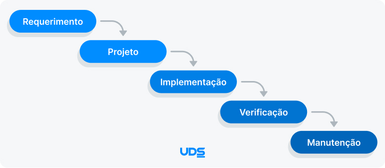
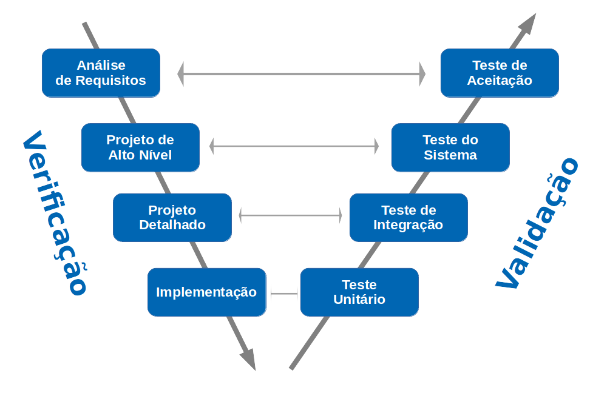
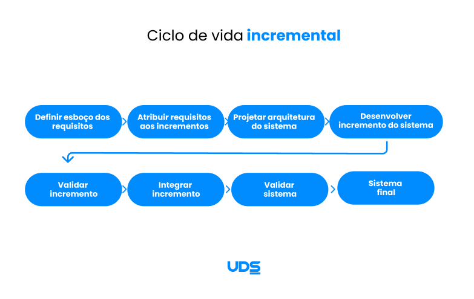
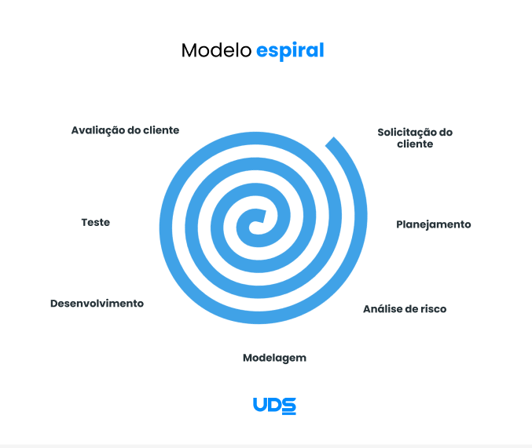
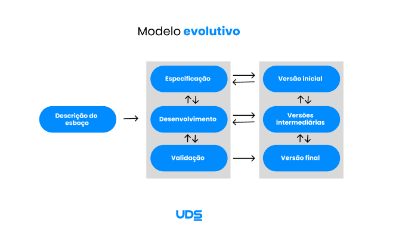

O Ciclo de Vida de Software representa a estrutura que orienta todas as etapas necessárias para desenvolver um sistema, desde a identificação da necessidade até sua manutenção após a entrega.
Ele não define apenas “o que fazer”, mas principalmente “como organizar” o desenvolvimento para reduzir riscos, controlar prazos e garantir qualidade.
Ao longo da evolução da Engenharia de Software, diferentes modelos foram propostos para lidar com desafios como mudanças de requisitos, complexidade técnica e necessidade de validação constante.
Esses modelos podem ser classificados em abordagens tradicionais e abordagens modernas.
Entre os modelos mais relevantes na área, destacam-se:
Cada um desses modelos surgiu em um contexto específico e apresenta vantagens e limitações que impactam diretamente o andamento de um projeto.

O Modelo Cascata é uma das primeiras abordagens estruturadas de desenvolvimento de software. Ele organiza o projeto de forma linear e sequencial, em etapas bem definidas como
levantamento de requisitos, análise, projeto, implementação, testes e manutenção.
A principal característica desse modelo é a conclusão total de uma fase antes do início da próxima. Isso favorece documentação detalhada e planejamento rigoroso.
No entanto, essa rigidez dificulta adaptações caso surjam mudanças nos requisitos durante o desenvolvimento.
É mais indicado para projetos com escopo bem definido e baixa incerteza.

O Modelo em V pode ser considerado uma evolução do Cascata. Sua principal diferença está na forte ênfase em verificação e validação. Para cada fase de desenvolvimento existe uma fase correspondente de teste, planejada desde o início do projeto.
Por exemplo, requisitos estão ligados a testes de aceitação, enquanto o projeto detalhado se relaciona com testes unitários e de integração. Essa estrutura aumenta o controle de qualidade e reduz falhas detectadas apenas no final do processo.
É amplamente utilizado em sistemas críticos.

O Modelo Incremental organiza o desenvolvimento do sistema em partes menores chamadas incrementos.
Cada incremento representa uma versão funcional do software.
Permite validação contínua e maior flexibilidade em relação ao modelo sequencial.

O Modelo Espiral é estruturado em ciclos sucessivos.
Em cada ciclo são realizadas atividades de planejamento, análise de riscos, desenvolvimento e avaliação.
É indicado para projetos complexos e de grande porte.

Com o aumento da necessidade de adaptação rápida às mudanças, surgiram as metodologias ágeis.
O Scrum utiliza sprints curtos, enquanto o Kanban organiza o fluxo de tarefas visualmente.
São indicadas para ambientes dinâmicos.
A tabela abaixo apresenta uma comparação entre os principais modelos.
| Modelo | Flexibilidade | Controle de Risco | Complexidade de Gestão | Documentação |
|---|---|---|---|---|
| Cascata | Baixa | Baixo | Baixa | Alta |
| Modelo em V | Baixa | Médio | Média | Alta |
| Incremental | Média | Médio | Média | Média |
| Espiral | Alta | Alto | Alta | Média |
| Ágil | Alta | Médio | Média | Baixa |
Os modelos de ciclo de vida refletem a evolução da Engenharia de Software.
A escolha depende da natureza do projeto e do nível de risco.